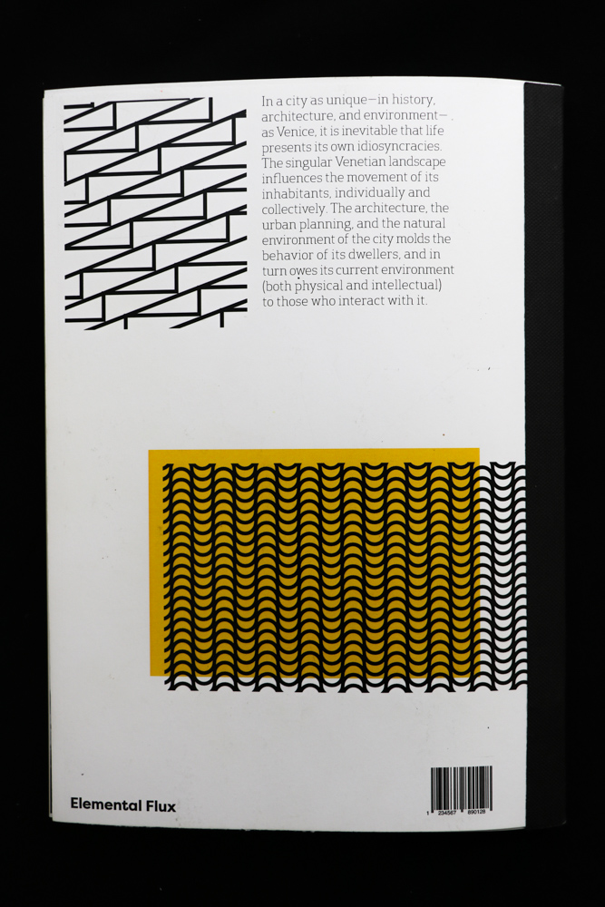
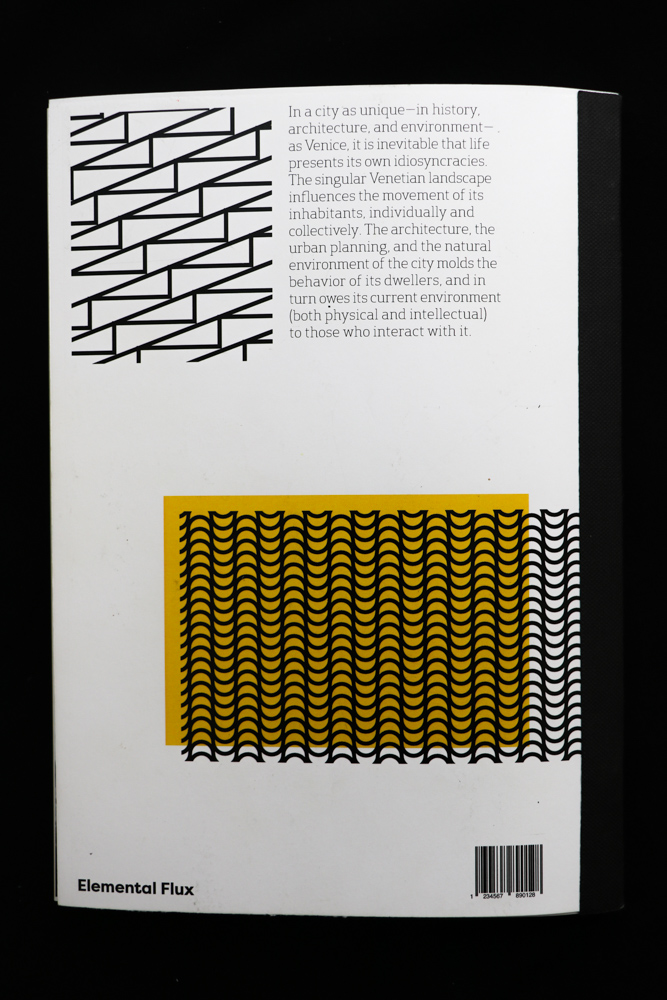

< Back
Accademia
Venezia, IT

Tate Modern
London, England
Growth
Georges Island, MA
Sainte Chapelle
Paris, FR
Charles River Esplanade on the 4th
Boston, MA
View from Mt. Jacinto
Palm Springs, CA

Alhambra
Granada, ES
Birds Eye and Human Heads
London, England

Louvre
Paris, FR

History
Pompei, IT
Multiples
L'Arc de Triomphe, Paris, FR
Food
Georges Island, MA

Deconstruction
Bologna, IT
View from Georges Island
J'Existe.
Les Champs-Élysées, Paris, FR
Prism
Boston, MA
Single-sided
London, UK

Feet + Tourism
Georges Island, MA
Lavoro
Napoli, IT
Classic
Manchester-by-the-Sea, MA


 
